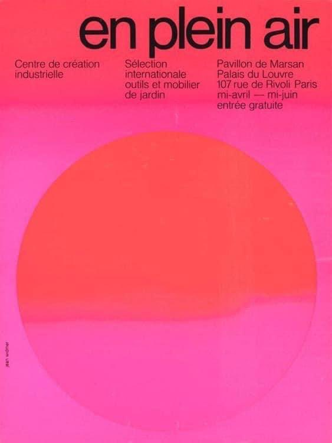
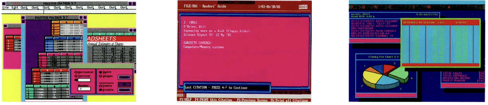
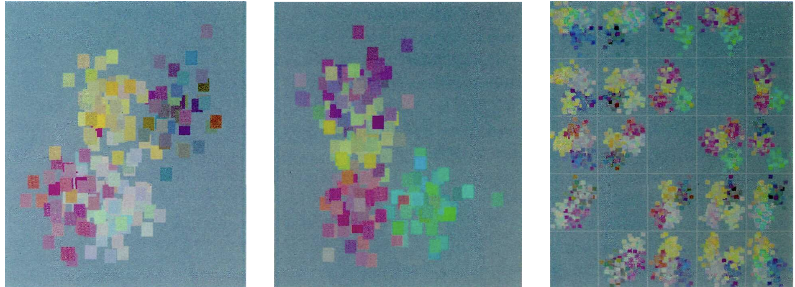

it's torture for me to watch them but i have to do this
i dreamt that i was back at my place. i was away for a weekend and came back to a couple using my apartment as a set for a folkore themed roleplay/altar, using my bed and all my stuff and the rest of the house was filled with dog shit and cal didn't want me to move in with him. the walls were flimsy. looking over the half wall into my apartment filled with girls in flowy dresses and flower crowns chanting, golden light. we breathed out tiny red particles. someone smashed the wall down on the other side.
another epiphany this morning: sense, memory. different from the image of a two sided mirror and an operating room filled with everyone i've ever observed, more true maybe, or less true.
I saw god Not bobbing in the ocean at sunrise But awoken at five am by a boom of thunder The sky aglow Pale light bursting through the outlines of the windowshade Impossibly bright